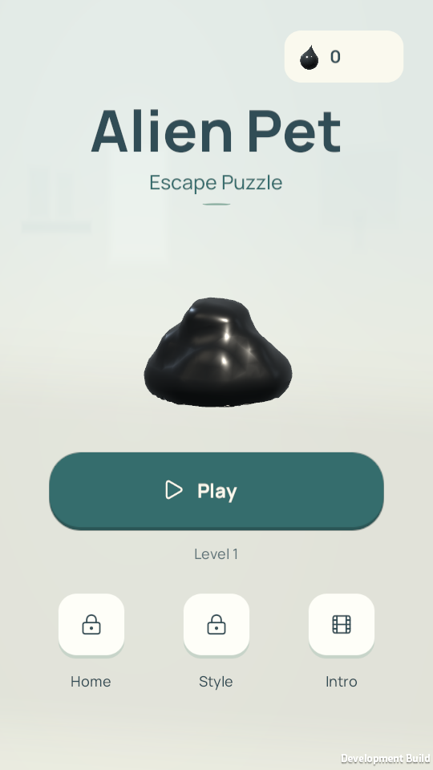
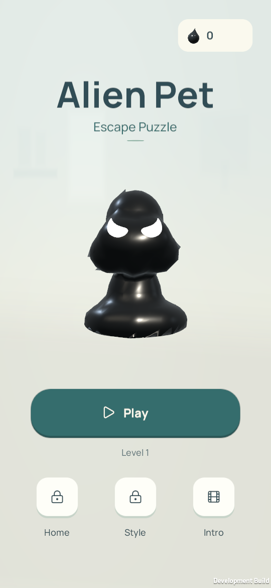
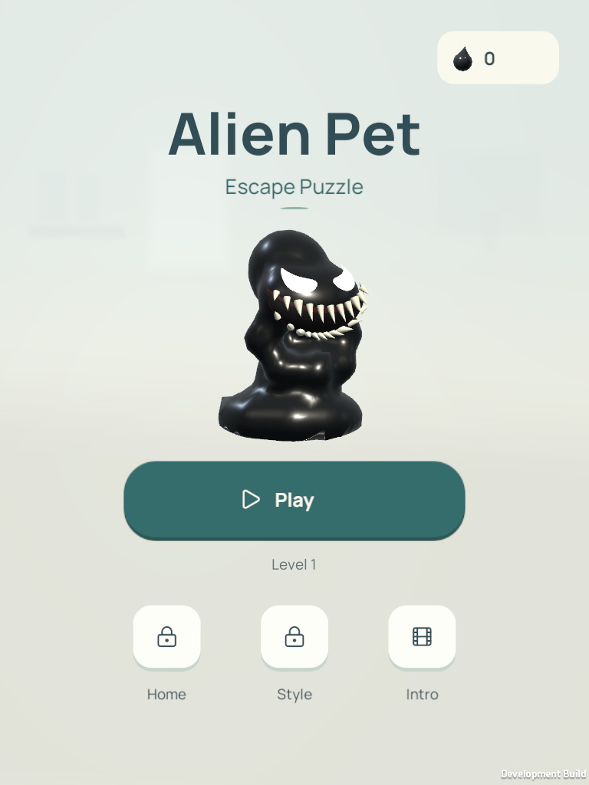
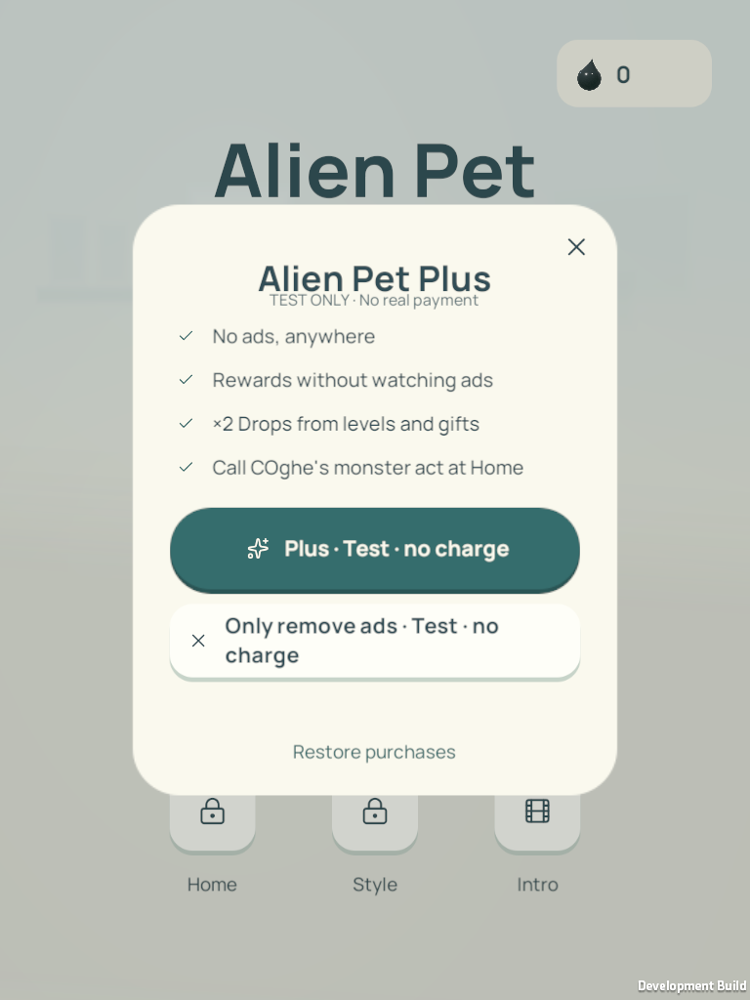
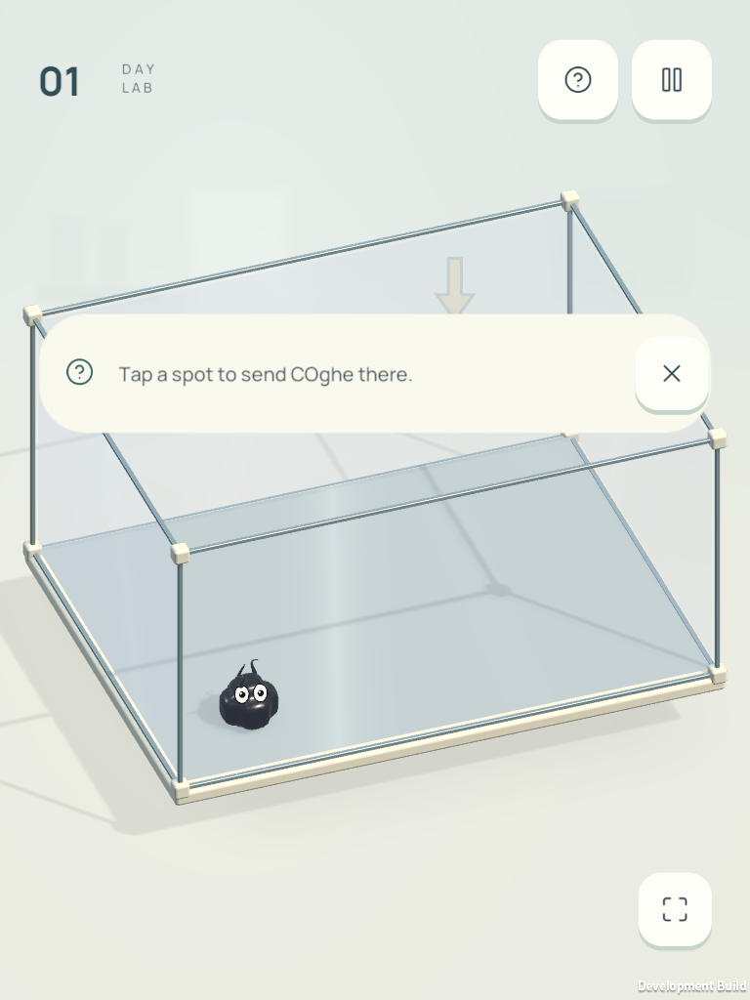
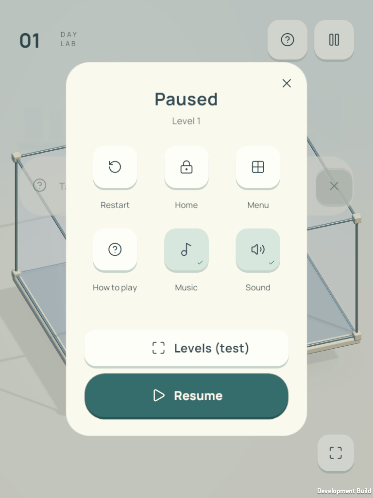

IDENTITY REVIEW · 28 OCTOBER 2026Alien Pet: Escape Puzzle
The game has a new name. COghe is still your alien companion. Actual native Unity captures below; approved Glass C art and gameplay are unchanged.

Phone · 9:16
Tall phone
Tablet · 3:4
Alien Pet Plus · test store
Gameplay retains the quiet HUD
Pause and control icons6 focused flow checks passed. Existing bundle IDs and player progress retained.